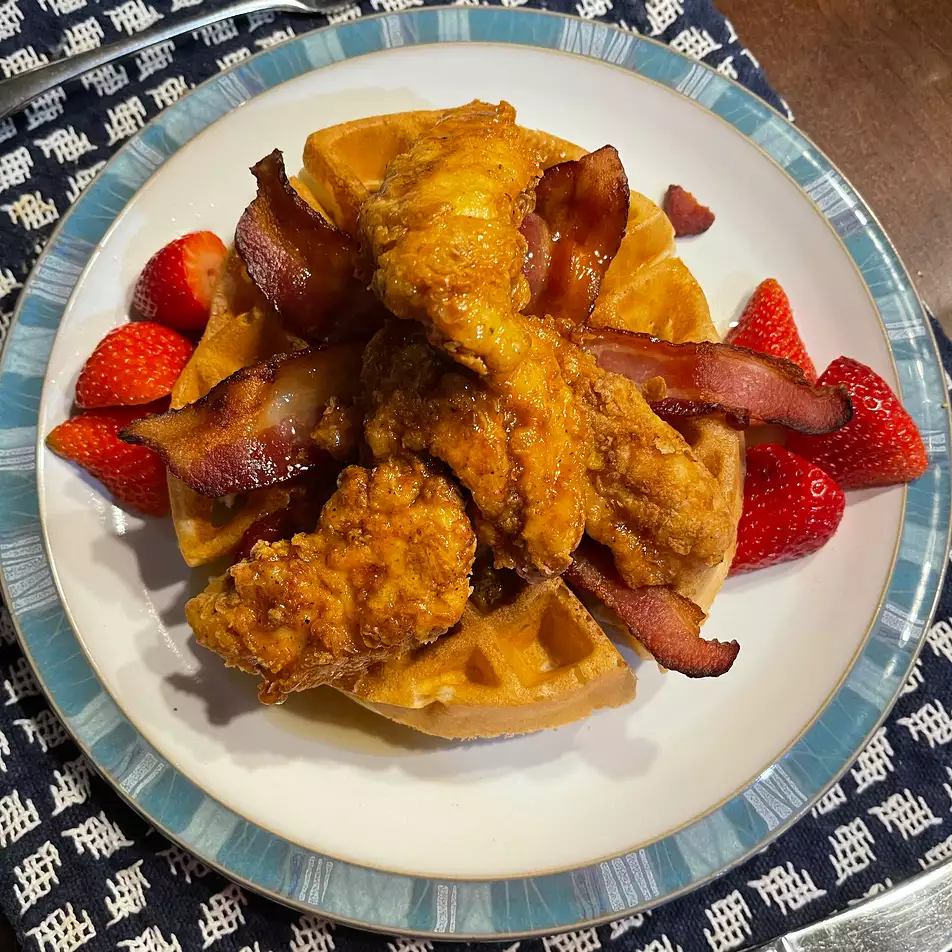

Chicken and Waffles

Description
Light, fluffy waffles. Crisp, juicy chicken. Who doesn't love this Southern classic that pairs the sweet and savory sides of the palate?
Ingredients
- 4 large eggs
- 1/4 cup heavy whipping cream
- 2 tbsp cayenne pepper
- 2 tbsp salt
- 1 tbsp ground black pepper
- 2 cups all-purpose flour
- 1 cup cornstarch
- 1 qt peanut oil for frying
- 8 chicken tenderloin cutlets
- 1 cup mayonnaise
- 1/4 cup maple syrup
- 2 tsp horseradish
- 1 tsp dry mustard powder
- 12 slices bacon
- 8 plain frozen waffles
Steps
- Whisk together eggs, whipping cream, cayenne pepper, 1 tbsp salt, and black pepper in a large mixing bowl. In a paper bag, shake together flour, cornstarch, and remaining 1 tbsp salt
- Dip chicken tenderloins into the beaten egg mixture, then place into the flour mixture and shake to coat. Place breaded chicken in a single layer on a wire rack. Let rest for 20 minutes to allow coating to set
- Heat about 3 inches of oil to 375 degrees F. In small batches, fry chicken 5 to 8 minutes until golden brown. Remove chicken, drain on paper towels. Set aside or keep warm in oven at low temp
- Combine mayonnaise, maple syrup, horseradish, and mustard powder in a medium bowl. Place bacon in a large skillet and cook over medium-high heat, turning occasionally until evenly browned, about 10 minutes. Drain bacon slices on a plate lined with paper towels
- Assemble sandwiches: place 4 waffles on a cookie sheet, top each waffle with 2 tenders, 3 slices of bacon, and 2 slices of cheddar cheese. Broil for 3 to 5 minutes, until cheese melts. Spread 3 tbsp of the maple mayonnaise on the remaining 4 waffles and place on top of the sandwich